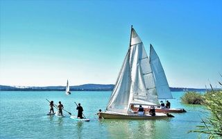
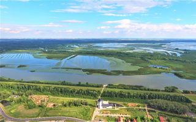
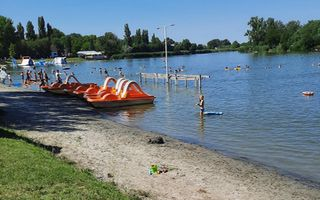

Balaton

A Balaton és környéke Magyarország legnépszerűbb üdülőhelye, amely vonzó úticél a hazai és külföldi turisták számára egyaránt. Nem véletlenül van így, hiszen vízparti kikapcsolódás, történelmi emlékek, különleges természeti értékek, remek kirándulási lehetőségek várják a látogatókat a "magyar tengernél".
A Balaton vidékén szőlőskertekkel díszített dombok, hosszú ideje szunnyadó vulkánok, megkövesedett lávaoszlopok, hűs árnyékot nyújtó erdők, zöld ligetek, virágzó mezők, rétek váltják egymást. A környék gazdag botanikai és földtani értékeit, az erdők különleges állatvilágát a Balaton-felvidéki Nemzeti Park óvja. A Balatonon évről évre egyre több fesztivál, rendezvény gondoskodik a kellemes időtöltésről. Szüreti fesztiválok, borhetek, borünnepek várják a borkedvelőket és a mulatozni vágyókat.
Nevezetes esemény a minden év július utolsó szombatján megrendezésre kerülő balatonfüredi Anna-bál. Remek programok várják a Balaton vendégeit nyáron a Művészetek Völgye néven ismert kulturális fesztiválon. A környékbeli lovardák és lovastanyák csikós-, vagy huszárbemutatóval szórakoztatják az érdeklődőket. Nagy népszerűségnek örvendenek vitorlás- és Balaton-átúszó versenyek is.
Tisza-tó

A Tisza-tó Magyarország második legnagyobb tava, amely az Alföld északi részén terül el. 127 km2-én számtalan sziget, holtág, és sekély kis csatorna váltja egymást a hatalmas, nyílt vízterületekkel, úgynevezett mozaikos tájat formálva. A Tisza-tó a Hortobágyi Nemzeti Park negyedik bemutató területe, s így 1999 óta az UNESCO Világörökség része.
Az Európai Bizottság 2010-ben ezt a térséget „Kiváló Európai Desztinációnak" nyilvánította, és „Magyarország legígéretesebb természetes vizű desztinációja" címet adományozta a Tisza-tónak. A Tisza-tónál a kikapcsolódás is legalább annyira változatos, mint maga a táj. A természetjáráson kívül a nyugodt strandolástól a vízisportok kipróbálásáig számtalan lehetőség kínálkozik.
A Tisza-tavi Túraközpont Hálózat segítségével megszervezhető a kirándulás, valamint csónakok és kerékpárok bérelhetők. Út közben barátságos kikötők, vendégházak és panziók várják az érkezőket. A tó kisebb szigetein csónakkal megközelíthető madár-megfigyelőhelyeket alakítottak ki, a fészkelőhelyek közelében, így a vízitúrák alatt alkalom nyílik a madárvilág tanulmányozására.
Szelidi-tó

Hazánk egyik legszebb területén, a Kiskunság legkedveltebb üdülőhelyén kicsik és nagyok egyaránt átélhetik a szabadvízi kikapcsolódás örömeit. A Szelidi-tó hazánk ötödik legnagyobb természetes állóvize, ahol fövenyes strandok, megannyi program és páratlan természeti környezet segít megfeledkezni a szürke hétköznapokról.
Legyen szó családi nyaralásról, egy dél-alföldi kerékpártúráról vagy egyszerűen csak egy hétvégi pecázásról, Dunapataj gyöngyszeme minden téren jelesre vizsgázik. A Szelidi-tó ma tó hármas rendeltetésű, ezek az üdülés, a horgászat és a természetvédelem.
A természetvédelem célja a tó különleges algavilágának, a parti zóna és a környező területek vegetációjának fenntartása. Amióta a tó feltöltésére szánt vizet a szomszédos gyepeken „pihentetik”, gazdagodott a tó és környékének madárvilága. Már nem csak a vékony nádszegélyben költő nádi énekesek énekében gyönyörködhetünk, hanem megcsodálhatjuk az átvonuló partimadarak és récék tömegeit is.